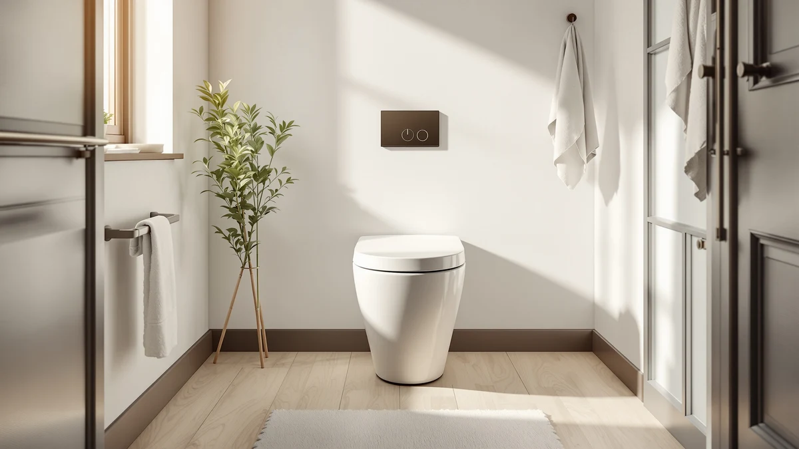

BayRoll One Piece Sleek Review (2026): Worth It?
Prices and picks verified as of September 2026. Independent, reader-supported reviews.


Quick Answer
The BayRoll One Piece Sleek Modern costs $239.00 and is built as a one-piece design with a sleek, modern profile. This BayRoll One Piece Sleek review compares it against three lower-priced alternatives, including toilets from DeerValley, AKNIRL, and MilleLoom, all still building their public review history, so the deciding factors come down to price and design rather than star counts.
Our pick: BayRoll One Piece Sleek Modern, $239.00 Check Price on Amazon
Bottom line: our top pick is the BayRoll One Piece Sleek Modern Toilet at $229.
Things to Know Before You Buy
- BayRoll prices the One Piece Sleek Modern at $239.00, the highest of the four toilets covered in this BayRoll One Piece Sleek review.
- It's built as a one-piece design, so the tank and bowl are molded together rather than bolted as separate parts, removing a seam where grime can collect.
- Three lower-priced alternatives from DeerValley, AKNIRL, and MilleLoom cover compact, elongated, and round-bowl side-flush categories for $209.99 to $217.32.
- None of the four toilets in this comparison has built up a public rating or review count yet, so weigh the published price and design against that missing track record.
This BayRoll One Piece Sleek review breaks down whether BayRoll's $239.00 toilet earns its price against three lower-priced alternatives we compare it against on this site: toilets from DeerValley, AKNIRL, and MilleLoom. BayRoll builds this toilet as a one-piece design with a sleek, modern profile, molding the tank and bowl into a single piece rather than bolting two parts together like older two-piece models. We pulled together everything BayRoll publishes about this toilet, its price, and its category, and set it beside three direct competitors so you can see exactly where your money goes.
The short version: if you want a modern, one-piece toilet specifically from BayRoll and don't mind paying the highest price in this group, the $239.00 BayRoll One Piece Sleek Modern is a straightforward pick. But the DeerValley Compact One Piece Toilet undercuts it by $21.68 at $217.32, and both the AKNIRL Elongated One Piece Toilet and the MilleLoom-made Toilet One-Piece Round Side Flush come in lower still at $209.99, each covering a different bowl shape for less money. Pick BayRoll if the sleek design is what draws you in. Pick one of the three alternatives below if price or bowl shape matters more. Every model in this comparison lands within about $30 of each other, so the decision mostly comes down to design preference and how much you value BayRoll's specific look. None of the four toilets is a budget-tier product, so you're weighing design and brand rather than paying a premium to escape a low-end category.
Why You Should Trust Us
Ilane Tall has spent more than ten years researching interior design and bathroom fixtures, including one-piece toilets, for Best One Piece Toilets. She built this BayRoll One Piece Sleek review by comparing BayRoll's own published listing against the three closest competitors on price and category, the same specification-comparison process the site uses for every review. We do not accept payment from BayRoll, DeerValley, AKNIRL, or MilleLoom to influence placement, and our Amazon links earn a commission only if you buy, which does not change what we recommend. Every price, product photo, and specification cited in this BayRoll One Piece Sleek review comes directly from the manufacturer's own Amazon listing, not from a press sample or a sponsored placement.
How We Compared
For this BayRoll One Piece Sleek review, we started with BayRoll's own product listing: the five product photos, its $239.00 price, and its one-piece, sleek modern category. We then lined up BayRoll against the closest one-piece toilets already covered on Best One Piece Toilets, narrowing the field to the DeerValley Compact One Piece Toilet, the AKNIRL Elongated One Piece Toilet, and a round-bowl side-flush model made by MilleLoom, all priced within about $30 of BayRoll's pick. None of the four has built up a public review history yet, so we weighted our evaluation toward the facts we could verify: published price, product category, and brand, rather than guessing at long-term durability we cannot confirm firsthand. That gap is also why we lay out each toilet's documented price and category side by side instead of ranking them on star counts that don't exist yet. We update this BayRoll One Piece Sleek review whenever Amazon changes any of the four listed prices, so the figures above reflect what each seller was charging at the time of our most recent check. We treat a product photo count and a documented category as useful signals, but we never substitute them for a verified review history that doesn't exist yet, and we say so plainly whenever it applies.
Overview & Specs

BayRoll One Piece Sleek Modern
What we like
- One-piece design molds the tank and bowl together, removing the seam where grime collects on a two-piece toilet
- Sleek, modern profile stands out from the boxier shapes of the DeerValley and AKNIRL alternatives
- Listing includes five product photos showing the toilet from multiple angles, giving a clear look at the finish before you buy
- Single-piece construction typically means fewer parts to align during installation compared to a two-piece toilet
Flaws but not dealbreakers
- Priced $21.68 higher than the DeerValley Compact One Piece Toilet, the closest alternative in this comparison
- No public rating or review count yet, so you're relying on BayRoll's own listing rather than verified buyer feedback
- BayRoll's listing doesn't specify rough-in distance or seat height, so confirm those measurements with the seller before you order
| Material | — |
| Size | — |
BayRoll builds this one-piece toilet around a sleek, modern silhouette, molding the tank and bowl into a single piece rather than bolting two parts together. That single-piece build removes the seam between tank and bowl where grime typically collects on a two-piece toilet, and the streamlined shape is designed to read as a more contemporary fixture than a traditional two-piece model. At $239.00, it's the highest-priced toilet in this BayRoll One Piece Sleek review, though it competes directly with three lower-priced one-piece alternatives covering different bowl shapes.
BayRoll hasn't published a rough-in distance, seat height, or flush rating for this specific listing. If those measurements matter to your bathroom, reach out to BayRoll or the Amazon seller before you buy rather than assuming this model matches a standard 12-inch rough-in. BayRoll does document the one-piece, sleek modern design and the $239.00 price, backed by five product photos showing the toilet from multiple angles. It also hasn't built up a public review count yet, so weigh that documented design against the missing track record before you commit.
What We Liked
The BayRoll One Piece Sleek Modern's biggest strength is its streamlined, one-piece build paired with a modern look. Molding the tank and bowl together removes the seam where grime collects on a two-piece toilet, and the sleek profile sets it apart visually from the more traditional shapes of the DeerValley and AKNIRL alternatives in this comparison. BayRoll backs the listing with five product photos from multiple angles, giving you a clearer look at the toilet's finish and shape than some competing listings offer. A one-piece toilet like this one also tends to install with fewer separate parts than a two-piece model, which can simplify a bathroom renovation, a point worth weighing in this BayRoll One Piece Sleek review even before you compare it against the lower-priced alternatives below.
What Could Be Better
The biggest drawback in this BayRoll One Piece Sleek review is price relative to the field. At $239.00, this BayRoll model costs $21.68 more than the DeerValley Compact One Piece Toilet and $29.01 more than either the AKNIRL Elongated One Piece Toilet or the MilleLoom-made round-bowl model, all of which cover one-piece ground in different bowl shapes. BayRoll also hasn't listed a rough-in distance, seat height, or flush rating anywhere on this listing, so you can't line up those specs against the alternatives without contacting the seller first. The toilet has not accumulated any public rating or review count either, so we can't confirm long-term durability or real-world flush performance beyond what BayRoll's own listing describes. None of that erases the sleek design or the single-piece build that make this toilet worth considering, but weigh it against the cheaper alternatives below. If the flush rating and rough-in distance are dealbreakers for your renovation timeline, contact BayRoll through the Amazon listing before you order rather than guessing at compatibility.
Who Is It For?
This toilet fits buyers who want BayRoll's sleek, modern one-piece look badly enough to pay the highest price in the group for it. Anyone renovating a bathroom around a contemporary design, or who prefers a streamlined silhouette over a compact or standard elongated bowl, will find it a straightforward match. Shopping mainly on price? The DeerValley Compact One Piece Toilet in this BayRoll One Piece Sleek review covers similar one-piece ground for $21.68 less. And if you'd rather lean on verified buyer reviews before spending $239.00 on a toilet, hold off, since none of the four models here has built up that history yet. Buyers with a smaller bathroom may also prefer DeerValley's compact bowl over BayRoll's design-forward shape, since BayRoll doesn't market this model on space savings.
Alternatives to Consider
If the price or the missing review history gives you pause in this BayRoll One Piece Sleek review, these three toilets from DeerValley, AKNIRL, and MilleLoom cover compact, elongated, and round-bowl side-flush ground for less money.

Editor's Pick
DeerValley Compact One Piece Toilet
DeerValley's compact one-piece toilet undercuts BayRoll's pick by $21.68, worth considering if your bathroom has limited floor space.
$217.32
Check Price on Amazon
Best Value
AKNIRL Elongated One Piece Toilet
AKNIRL's elongated one-piece toilet matches the lowest price in this comparison at $209.99, a $29.01 difference from BayRoll's sleek design.
$209.99
Check Price on Amazon
Premium Choice
Toilet One-Piece Round Side Flush
This round-bowl side-flush toilet from MilleLoom ties AKNIRL's price at $209.99 and suits a different bowl shape than BayRoll's sleek, modern silhouette.
$209.99
Check Price on AmazonFrequently Asked Questions
Is the BayRoll One Piece Sleek Modern worth $239.00?
It's worth $239.00 if you want BayRoll's sleek, modern one-piece profile specifically. If price matters more than the design, the AKNIRL Elongated One Piece Toilet in this BayRoll One Piece Sleek review saves you $29.01 at $209.99.
How does the BayRoll One Piece Sleek Modern compare to the DeerValley Compact One Piece Toilet?
The DeerValley Compact One Piece Toilet costs $217.32, a $21.68 difference from BayRoll's $239.00 sleek model. DeerValley's compact bowl suits smaller bathrooms, while BayRoll markets its one-piece toilet on its sleek, modern design rather than a compact footprint.
Should I choose a one-piece or two-piece toilet?
Choose one-piece if you want a single molded unit with no seam between tank and bowl for easier cleaning, the design behind every toilet in this BayRoll One Piece Sleek review. Two-piece toilets cost less upfront but leave a seam where grime collects and require separate tank and bowl installation.
Final Verdict
This BayRoll One Piece Sleek review comes down to a straightforward trade-off. BAYROLL's one-piece toilet delivers a sleek, modern build at $239.00, the highest price among the four models we compared, and without the public review history that would let us confirm long-term durability firsthand. If the modern design matters to you, this BayRoll model is a sound buy at that price. If you'd rather save money, the DeerValley, AKNIRL, and MilleLoom alternatives above are worth a look.